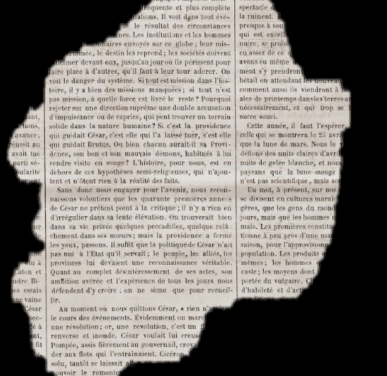

Site desenvolvido para criptar e descriptar mensagens
Baseado no método da cifra de César
Permitindo que o usuário tenha mais privacidade durante as suas conversas.
A cifra de César é um dos primeiros tipos de criptografias conhecidas na história.
O imperador romano Júlio César utilizava essa cifra para enviar ordens secretas aos seus generais no campo de batalha.
A cifra de César é uma das técnicas mais simples de cifrar uma mensagem.
É um tipo de cifra por substituição,
em que cada letra do texto original é substituida por outra que se encontra há um número fixo de posições (deslocamento) mais a frente do mesmo alfabeto.
Por exemplo se usarmos o deslocamento (offset) de 3 posições:
Alfabeto sem cifrar: A B C D E F G H I J K L M N O P Q R S T U V W X Y Z
Alfabeto com cifra: D E F G H I J K L M N O P Q R S T U V W X Y Z A B C
A letra A será D
A palavra CASA será FDVD

Como codificar e decodificar seus textos
- Digite o texto a ser cifrado no campo texto.
- Escolha um número no campo chave
- Quando o usuário apertar o botão cifrar, o texto codificado irá aparecer na tela.
- Quandoo usuário apertar o botão decifrar, o texto decodificado irá aparecer na tela.